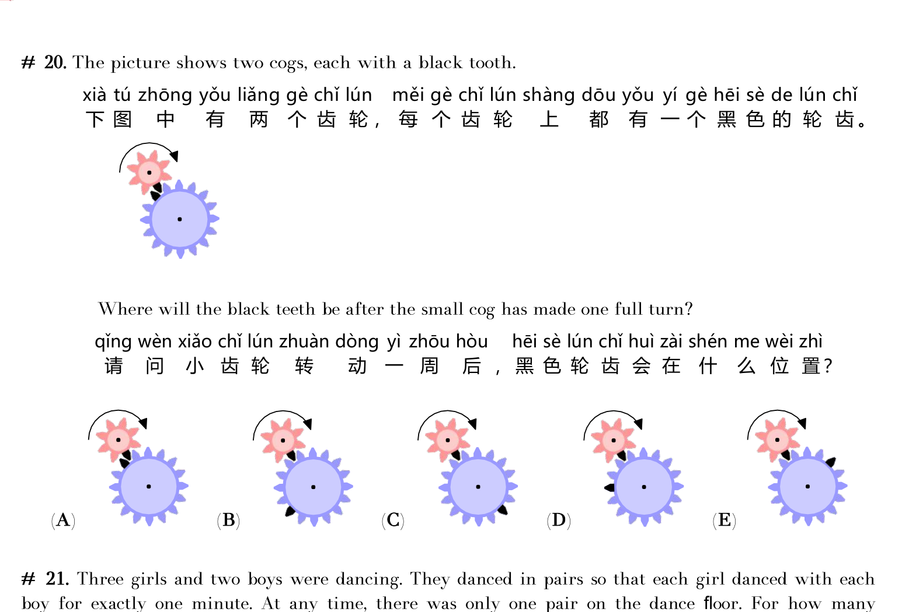

题目
Problem
图中有两个齿轮，每个都有一颗黑齿。小齿轮完整转一圈后，两颗黑齿会在什么位置？
The picture shows two cogs, each with a black tooth. Where will the black teeth be after the small cog has made one full turn?

实验台：真正咬合转动的齿轮
Lab: gears that really mesh and spin
1
先点小齿轮的齿，数清有几颗（转一圈 = 转过这么多齿）。
Tap pink teeth to count them (one full turn = that many tooth-steps).
2
点「转 1 齿」看两轮咬合转动；或「转满一圈」看完整动画。
Tap “Spin 1 tooth” or “Full turn” to watch them mesh.
3
小轮转满一圈后，对照题目选项选 A–E。
After one full pink turn, match options A–E.
◀ 小齿轮顺时针◀ Small CW
大齿轮反向 ▶Large CCW ▶
两轮咬合：小轮顺时针转，大轮一定反向转；一边走过 1 齿，另一边也走过 1 齿。
Meshed: pink CW ⇒ blue CCW; one tooth on one side means one tooth on the other.
对照题目选项，选出答案：
Match the problem options: